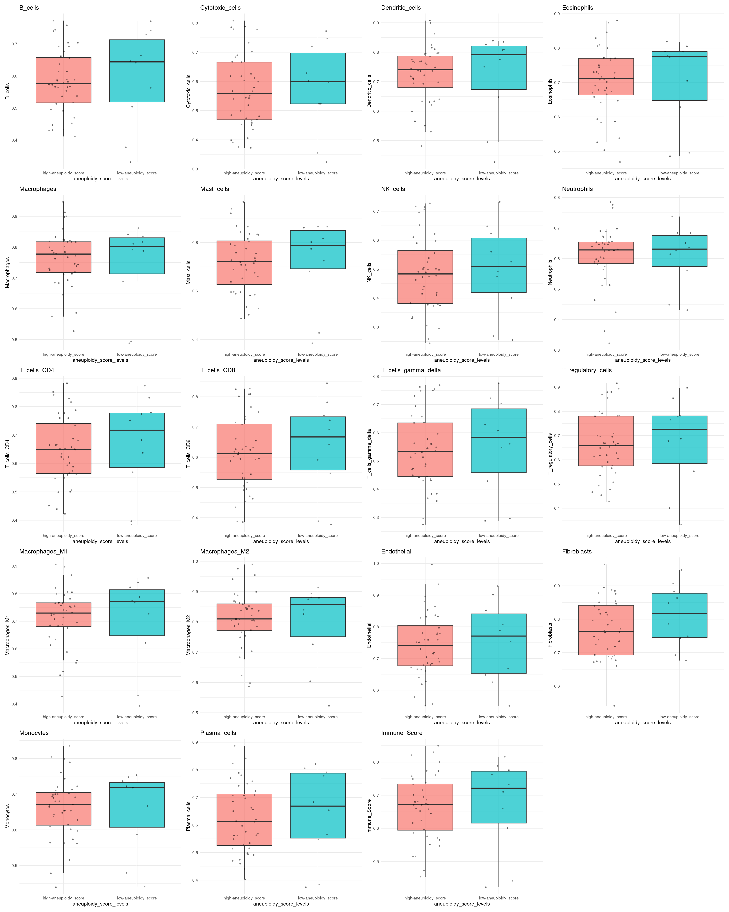

Tumour microenvironment cell estimation (ConsensusTME)
05 June, 2025
Last updated: 2025-06-05
Checks: 6 1
Knit directory: casper_ss_ma/analysis/
This reproducible R Markdown analysis was created with workflowr (version 1.7.1). The Checks tab describes the reproducibility checks that were applied when the results were created. The Past versions tab lists the development history.
Great! Since the R Markdown file has been committed to the Git repository, you know the exact version of the code that produced these results.
Great job! The global environment was empty. Objects defined in the global environment can affect the analysis in your R Markdown file in unknown ways. For reproduciblity it’s best to always run the code in an empty environment.
The command set.seed(12345) was run prior to running the
code in the R Markdown file. Setting a seed ensures that any results
that rely on randomness, e.g. subsampling or permutations, are
reproducible.
Great job! Recording the operating system, R version, and package versions is critical for reproducibility.
Nice! There were no cached chunks for this analysis, so you can be confident that you successfully produced the results during this run.
Using absolute paths to the files within your workflowr project makes it difficult for you and others to run your code on a different machine. Change the absolute path(s) below to the suggested relative path(s) to make your code more reproducible.
| absolute | relative |
|---|---|
| /hpcnfs/scratch/DIMA/piva/casper_ss_ma/data/samples_metadata.csv | ../data/samples_metadata.csv |
| /hpcnfs/scratch/DIMA/piva/casper_ss_ma/data/data.Rdata | ../data/data.Rdata |
| /hpcnfs/scratch/DIMA/piva/casper_ss_ma/data/consensusTME.csv | ../data/consensusTME.csv |
Great! You are using Git for version control. Tracking code development and connecting the code version to the results is critical for reproducibility.
The results in this page were generated with repository version 2840d6d. See the Past versions tab to see a history of the changes made to the R Markdown and HTML files.
Note that you need to be careful to ensure that all relevant files for
the analysis have been committed to Git prior to generating the results
(you can use wflow_publish or
wflow_git_commit). workflowr only checks the R Markdown
file, but you know if there are other scripts or data files that it
depends on. Below is the status of the Git repository when the results
were generated:
Ignored files:
Ignored: .Rhistory
Ignored: .Rproj.user/
Ignored: code/
Untracked files:
Untracked: .DS_Store
Untracked: analysis/01_degs_go.Rmd
Untracked: data/
Untracked: support_code.R
Unstaged changes:
Modified: analysis/00_casper_analysis.Rmd
Modified: casper_ss_ma.Rproj
Note that any generated files, e.g. HTML, png, CSS, etc., are not included in this status report because it is ok for generated content to have uncommitted changes.
These are the previous versions of the repository in which changes were
made to the R Markdown (analysis/02_deconvolution.Rmd) and
HTML (docs/02_deconvolution.html) files. If you’ve
configured a remote Git repository (see ?wflow_git_remote),
click on the hyperlinks in the table below to view the files as they
were in that past version.
| File | Version | Author | Date | Message |
|---|---|---|---|---|
| Rmd | 2840d6d | annamariapiva | 2025-06-05 | workflowr::wflow_publish("analysis/02_deconvolution.Rmd") |
| html | 150ebe1 | annamariapiva | 2025-06-05 | Build site. |
| Rmd | 826ff33 | annamariapiva | 2025-06-05 | workflowr::wflow_publish("analysis/02_deconvolution.Rmd") |
knitr::opts_chunk$set(echo = TRUE, message = FALSE, warning = FALSE)ConsensusTME
library(RSQLite)
library(ConsensusTME)
# ConsensusTME::cancerAll # BRCAThe ConsensusTME package provides a integrative tool for R that uses a consensus approach to generating cancer specific signatures for multiple cell types found within the tumour microenvironment.
These consensus gene sets are then used within a ssGSEA framework to provide normalised enrichment scores for each of the cell types representing the relative abundance of cell types across multiple samples.
It is important to note that results generated in this way will provide quantification of cell types that are relative across samples rather than across cell types.
returns estimation of cell type abundance for each sample in the bulk tumour gene expression matrix. Immune Score represents the overall level of immune infiltration for each sample.
# sample_info table
sample_info = read.table("/hpcnfs/scratch/DIMA/piva/casper_ss_ma/data/samples_metadata.csv", header=T, sep = ',', row.names = 1)
rownames(sample_info) <- sample_info$samplename
sample_info$condition <- as.factor(sample_info$condition)
sample_info$batch <- as.factor(sample_info$batches)
# annotation
load('/hpcnfs/scratch/DIMA/piva/casper_ss_ma/data/data.Rdata')
#head(data) # TPM counts
# convert ENS gene id to Gene symbol
# gene symbol x patients # Matrix is a numerical matrix with gene symbol as rownames
matrix=data
genes=sub("\\..*", "", rownames(matrix))
length(genes)[1] 48643length(unique(genes))[1] 48643gene_map <- setNames(annotation$GeneSymbol, annotation$Gene)
symbols <- gene_map[genes]
sum(is.na(symbols))[1] 0sum(duplicated(symbols[!is.na(symbols)]))[1] 12070summary_df <- data.frame(
Total = length(symbols),
Unique = length(unique(symbols)),
NAs = sum(is.na(symbols)),
Duplicated = sum(duplicated(symbols[!is.na(symbols)])),
Empty = sum(symbols == "" | symbols == " ", na.rm = TRUE)
)
print(summary_df) Total Unique NAs Duplicated Empty
1 48643 36573 0 12070 12064symbols <- make.unique(as.character(symbols))
matrix=apply(matrix, 2, as.numeric)
rownames(matrix)=symbols
matrix=matrix[!is.na(rownames(matrix)), ]
matrix=matrix[rownames(matrix)!=" ", ]
matrix=matrix[rownames(matrix)!="", ]
matrix[1:10,1:10] S58505_HR_plus_7 S58506_HR_plus_15 S58507_HR_plus_12 S58508_HR_plus_5
DPM1 15.916 13.281 15.728 15.069
SCYL3 14.932 18.384 19.453 17.914
FIRRM 11.570 11.798 9.876 10.387
FGR 3.312 3.145 4.254 3.592
CFH 27.985 43.312 43.208 35.365
FUCA2 15.597 14.116 15.654 16.926
GCLC 27.593 18.909 22.520 45.403
NFYA 29.826 33.545 29.806 28.779
STPG1 1.920 3.094 2.464 2.959
NIPAL3 23.345 17.738 17.147 14.233
S58509_TNBC_14 S58510_HR_plus_11 S58511_HR_plus_16 S58512_HR_plus_6
DPM1 33.159 31.519 14.970 15.930
SCYL3 9.918 12.143 9.062 17.188
FIRRM 10.864 9.063 7.962 10.645
FGR 6.579 1.621 8.091 2.126
CFH 32.746 14.032 27.941 16.921
FUCA2 34.472 13.416 10.453 10.133
GCLC 27.022 9.399 17.179 29.156
NFYA 30.165 29.682 19.129 25.339
STPG1 2.652 1.644 2.037 2.873
NIPAL3 15.359 8.391 9.671 15.605
S58513_HR_plus_14 S58514_HR_plus_8
DPM1 21.426 11.599
SCYL3 14.663 7.321
FIRRM 9.546 4.911
FGR 2.583 1.736
CFH 23.358 37.848
FUCA2 17.493 9.405
GCLC 26.855 20.424
NFYA 18.850 15.604
STPG1 2.724 0.748
NIPAL3 21.230 9.370consensus=ConsensusTME::consensusTMEAnalysis(matrix, cancerType = 'BRCA', )Producing ConsensusTME Estimates Using The Following Parameters:
Statistical Framework: "ssgsea"
Gene Sets For Cancer Type: "BRCA"
Sample Size: 149Estimating ssGSEA scores for 19 gene sets.
[1] "Calculating ranks..."
[1] "Calculating absolute values from ranks..."
| | | 0% | | | 1% | |= | 1% | |= | 2% | |== | 3% | |=== | 4% | |=== | 5% | |==== | 5% | |==== | 6% | |===== | 7% | |====== | 8% | |====== | 9% | |======= | 9% | |======= | 10% | |======== | 11% | |======== | 12% | |========= | 13% | |========== | 14% | |========== | 15% | |=========== | 15% | |=========== | 16% | |============ | 17% | |============= | 18% | |============= | 19% | |============== | 19% | |============== | 20% | |=============== | 21% | |================ | 22% | |================ | 23% | |================= | 24% | |================= | 25% | |================== | 26% | |=================== | 27% | |=================== | 28% | |==================== | 28% | |==================== | 29% | |===================== | 30% | |====================== | 31% | |====================== | 32% | |======================= | 32% | |======================= | 33% | |======================= | 34% | |======================== | 34% | |======================== | 35% | |========================= | 36% | |========================== | 37% | |========================== | 38% | |=========================== | 38% | |=========================== | 39% | |============================ | 40% | |============================= | 41% | |============================= | 42% | |============================== | 42% | |============================== | 43% | |=============================== | 44% | |=============================== | 45% | |================================ | 46% | |================================= | 47% | |================================= | 48% | |================================== | 48% | |================================== | 49% | |=================================== | 50% | |==================================== | 51% | |==================================== | 52% | |===================================== | 52% | |===================================== | 53% | |====================================== | 54% | |======================================= | 55% | |======================================= | 56% | |======================================== | 57% | |======================================== | 58% | |========================================= | 58% | |========================================= | 59% | |========================================== | 60% | |=========================================== | 61% | |=========================================== | 62% | |============================================ | 62% | |============================================ | 63% | |============================================= | 64% | |============================================== | 65% | |============================================== | 66% | |=============================================== | 66% | |=============================================== | 67% | |=============================================== | 68% | |================================================ | 68% | |================================================ | 69% | |================================================= | 70% | |================================================== | 71% | |================================================== | 72% | |=================================================== | 72% | |=================================================== | 73% | |==================================================== | 74% | |===================================================== | 75% | |===================================================== | 76% | |====================================================== | 77% | |====================================================== | 78% | |======================================================= | 79% | |======================================================== | 80% | |======================================================== | 81% | |========================================================= | 81% | |========================================================= | 82% | |========================================================== | 83% | |=========================================================== | 84% | |=========================================================== | 85% | |============================================================ | 85% | |============================================================ | 86% | |============================================================= | 87% | |============================================================== | 88% | |============================================================== | 89% | |=============================================================== | 90% | |=============================================================== | 91% | |================================================================ | 91% | |================================================================ | 92% | |================================================================= | 93% | |================================================================== | 94% | |================================================================== | 95% | |=================================================================== | 95% | |=================================================================== | 96% | |==================================================================== | 97% | |===================================================================== | 98% | |===================================================================== | 99% | |======================================================================| 99% | |======================================================================| 100%
[1] "Normalizing..."consensus=t(consensus)
consensus=merge(consensus, sample_info, by = "row.names", all = TRUE )Correlation between TME enrichment and aneuploidy score (from CaSPeR)
library(ggplot2)
library(ggpubr) # For stat_cor()
library(patchwork) # For layout
target_var <- "aneuploidy_score"
feature_vars = colnames(consensus)[2:20]
df=consensus
# Create scatterplots with correlation
plots <- lapply(feature_vars, function(var) {
ggplot(df, aes_string(x = var, y = target_var, color = "condition")) +
geom_point(alpha = 0.6) +
geom_smooth(method = "lm", se = FALSE, color = "blue") +
stat_cor(method = "pearson", label.x.npc = "left", label.y.npc = "top", size = 3.5) +
ggtitle(var) +
theme_minimal(base_size = 10)
})
# Combine into a grid
wrap_plots(plots, ncol = 4)
| Version | Author | Date |
|---|---|---|
| 150ebe1 | annamariapiva | 2025-06-05 |
Correlation between TME enrichment and CD82 gene expression
target_var <- "ENSG00000085117"
feature_vars = colnames(consensus)[2:20]
df=consensus
# Create scatterplots with correlation
plots <- lapply(feature_vars, function(var) {
ggplot(df, aes_string(x = var, y = target_var, color = "condition")) +
geom_point(alpha = 0.6) +
geom_smooth(method = "lm", se = FALSE, color = "blue") +
stat_cor(method = "pearson", label.x.npc = "left", label.y.npc = "top", size = 3.5) +
ggtitle(var) +
theme_minimal(base_size = 10)
})
# Combine into a grid
wrap_plots(plots, ncol = 4)
| Version | Author | Date |
|---|---|---|
| 150ebe1 | annamariapiva | 2025-06-05 |
Boxplot of TME enrichment across conditions
df=consensus
df=df[!is.na(df$ENSG00000085117), ]
df$CD82_levels=ifelse(df$ENSG00000085117>median(df$ENSG00000085117), 'high-CD82', 'low-CD82')
df$aneuploidy_score_levels=ifelse(df$aneuploidy_score>median(df$aneuploidy_score), 'high-aneuploidy_score', 'low-aneuploidy_score')
condition_col <- "condition"
boxplot_vars = colnames(consensus)[2:20]
plots <- lapply(boxplot_vars, function(var) {
ggplot(df, aes_string(x = condition_col, y = var, fill = condition_col)) +
geom_boxplot(outlier.shape = NA, alpha = 0.7) +
geom_jitter(width = 0.2, alpha = 0.4, size = 0.8) +
ggtitle(var) +
theme_minimal(base_size = 10) +
theme(legend.position = "none")
})
wrap_plots(plots, ncol = 4)
| Version | Author | Date |
|---|---|---|
| 150ebe1 | annamariapiva | 2025-06-05 |
Boxplot of TME enrichment across CD82 gene levels (stratified by median)
condition_col <- "CD82_levels"
boxplot_vars = colnames(consensus)[2:20]
plots <- lapply(boxplot_vars, function(var) {
ggplot(df, aes_string(x = condition_col, y = var, fill = condition_col)) +
geom_boxplot(outlier.shape = NA, alpha = 0.7) +
geom_jitter(width = 0.2, alpha = 0.4, size = 0.8) +
ggtitle(var) +
theme_minimal(base_size = 10) +
theme(legend.position = "none")
})
wrap_plots(plots, ncol = 4)
| Version | Author | Date |
|---|---|---|
| 150ebe1 | annamariapiva | 2025-06-05 |
Boxplot of TME enrichment across aneuploidy score levels (stratified by median)
condition_col <- "aneuploidy_score_levels"
boxplot_vars = colnames(consensus)[2:20]
plots <- lapply(boxplot_vars, function(var) {
ggplot(df, aes_string(x = condition_col, y = var, fill = condition_col)) +
geom_boxplot(outlier.shape = NA, alpha = 0.7) +
geom_jitter(width = 0.2, alpha = 0.4, size = 0.8) +
ggtitle(var) +
theme_minimal(base_size = 10) +
theme(legend.position = "none")
})
wrap_plots(plots, ncol = 4)
| Version | Author | Date |
|---|---|---|
| 150ebe1 | annamariapiva | 2025-06-05 |
Boxplot of TME enrichment across CD82 expression categories (by IHC) in TNBC
condition_col <-"CATEGORY.1." # "CATEGORY.1." #"CD82_levels"
boxplot_vars = colnames(consensus)[2:20]
plots <- lapply(boxplot_vars, function(var) {
ggplot(df[df$condition=="TNBC",], aes_string(x = condition_col, y = var, fill = condition_col)) +
geom_boxplot(outlier.shape = NA, alpha = 0.7) +
geom_jitter(width = 0.2, alpha = 0.4, size = 0.8) +
ggtitle(var) +
theme_minimal(base_size = 10) +
theme(legend.position = "none")
})
wrap_plots(plots, ncol = 4)
| Version | Author | Date |
|---|---|---|
| 150ebe1 | annamariapiva | 2025-06-05 |
Boxplot of TME enrichment across aneuploidy score levels in TNBC
condition_col <- "aneuploidy_score_levels"
boxplot_vars = colnames(consensus)[2:20]
plots <- lapply(boxplot_vars, function(var) {
ggplot(df[df$condition=="TNBC",], aes_string(x = condition_col, y = var, fill = condition_col)) +
geom_boxplot(outlier.shape = NA, alpha = 0.7) +
geom_jitter(width = 0.2, alpha = 0.4, size = 0.8) +
ggtitle(var) +
theme_minimal(base_size = 10) +
theme(legend.position = "none")
})
wrap_plots(plots, ncol = 4)
| Version | Author | Date |
|---|---|---|
| 150ebe1 | annamariapiva | 2025-06-05 |
condition_col <- "aneuploidy_score_levels"
boxplot_vars = colnames(consensus)[2:20]
plots <- lapply(boxplot_vars, function(var) {
ggplot(df, aes_string(x = condition_col, y = var, fill = 'condition')) +
geom_boxplot(outlier.shape = NA, alpha = 0.7) +
geom_jitter(width = 0.2, alpha = 0.4, size = 0.8) +
ggtitle(var) +
theme_minimal(base_size = 10) +
theme(legend.position = "none")
})
wrap_plots(plots, ncol = 4)
| Version | Author | Date |
|---|---|---|
| 150ebe1 | annamariapiva | 2025-06-05 |
#write.csv(consensus, '/hpcnfs/scratch/DIMA/piva/casper_ss_ma/data/consensusTME.csv')
sessionInfo()R version 4.3.1 (2023-06-16)
Platform: x86_64-pc-linux-gnu (64-bit)
Running under: Ubuntu 22.04.3 LTS
Matrix products: default
BLAS: /usr/lib/x86_64-linux-gnu/openblas-pthread/libblas.so.3
LAPACK: /usr/lib/x86_64-linux-gnu/openblas-pthread/libopenblasp-r0.3.20.so; LAPACK version 3.10.0
locale:
[1] LC_CTYPE=en_US.UTF-8 LC_NUMERIC=C
[3] LC_TIME=en_US.UTF-8 LC_COLLATE=en_US.UTF-8
[5] LC_MONETARY=en_US.UTF-8 LC_MESSAGES=en_US.UTF-8
[7] LC_PAPER=en_US.UTF-8 LC_NAME=C
[9] LC_ADDRESS=C LC_TELEPHONE=C
[11] LC_MEASUREMENT=en_US.UTF-8 LC_IDENTIFICATION=C
time zone: Etc/UTC
tzcode source: system (glibc)
attached base packages:
[1] stats graphics grDevices utils datasets methods base
other attached packages:
[1] patchwork_1.3.0 ggpubr_0.6.0 ggplot2_3.5.2
[4] ConsensusTME_0.0.1.9000 RSQLite_2.3.4
loaded via a namespace (and not attached):
[1] DBI_1.2.3 bitops_1.0-9
[3] GSEABase_1.62.0 rlang_1.1.2
[5] magrittr_2.0.3 git2r_0.32.0
[7] matrixStats_1.1.0 compiler_4.3.1
[9] mgcv_1.9-0 DelayedMatrixStats_1.22.6
[11] png_0.1-8 vctrs_0.6.3
[13] stringr_1.5.1 pkgconfig_2.0.3
[15] crayon_1.5.3 fastmap_1.2.0
[17] backports_1.5.0 XVector_0.40.0
[19] labeling_0.4.3 promises_1.3.2
[21] rmarkdown_2.29 graph_1.78.0
[23] purrr_1.0.4 bit_4.0.5
[25] xfun_0.52 zlibbioc_1.46.0
[27] cachem_1.1.0 beachmat_2.16.0
[29] GenomeInfoDb_1.36.4 jsonlite_2.0.0
[31] blob_1.2.4 later_1.4.2
[33] rhdf5filters_1.12.1 DelayedArray_0.26.7
[35] Rhdf5lib_1.22.1 BiocParallel_1.34.2
[37] broom_1.0.8 irlba_2.3.5.1
[39] parallel_4.3.1 R6_2.6.1
[41] bslib_0.9.0 stringi_1.8.7
[43] RColorBrewer_1.1-3 car_3.1-3
[45] GenomicRanges_1.52.1 jquerylib_0.1.4
[47] Rcpp_1.0.12 SummarizedExperiment_1.30.2
[49] knitr_1.50 GSVA_1.48.3
[51] IRanges_2.34.1 splines_4.3.1
[53] httpuv_1.6.16 Matrix_1.6-1
[55] tidyselect_1.2.1 rstudioapi_0.17.1
[57] dichromat_2.0-0.1 abind_1.4-8
[59] yaml_2.3.10 codetools_0.2-19
[61] lattice_0.21-8 tibble_3.2.1
[63] Biobase_2.60.0 withr_3.0.2
[65] KEGGREST_1.40.1 evaluate_1.0.3
[67] Biostrings_2.68.1 pillar_1.10.2
[69] carData_3.0-5 MatrixGenerics_1.12.3
[71] whisker_0.4.1 stats4_4.3.1
[73] generics_0.1.4 rprojroot_2.0.4
[75] RCurl_1.98-1.14 S4Vectors_0.38.2
[77] sparseMatrixStats_1.12.2 scales_1.4.0
[79] xtable_1.8-4 glue_1.8.0
[81] tools_4.3.1 ScaledMatrix_1.8.1
[83] ggsignif_0.6.4 annotate_1.78.0
[85] fs_1.6.6 XML_3.99-0.16
[87] rhdf5_2.44.0 grid_4.3.1
[89] tidyr_1.3.1 AnnotationDbi_1.62.2
[91] SingleCellExperiment_1.22.0 nlme_3.1-162
[93] GenomeInfoDbData_1.2.10 BiocSingular_1.16.0
[95] HDF5Array_1.28.1 Formula_1.2-5
[97] cli_3.6.2 rsvd_1.0.5
[99] workflowr_1.7.1 S4Arrays_1.0.6
[101] dplyr_1.1.3 gtable_0.3.6
[103] rstatix_0.7.2 sass_0.4.10
[105] digest_0.6.37 BiocGenerics_0.46.0
[107] farver_2.1.2 memoise_2.0.1
[109] htmltools_0.5.8.1 lifecycle_1.0.4
[111] httr_1.4.7 bit64_4.0.5